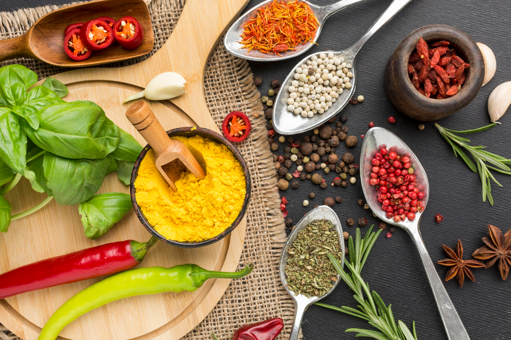

| Thick-cut beef steak(s), at least 1 1/2 to 2 inches thick, such as ribeye, strip, porterhouse, T-bone, tri-tip, or filet mignon |
| Kosher salt and freshly ground black pepper |
| Vegetable oil (if finishing on the stovetop; optional) |
| 1 tablespoon (15g) unsalted butter (if finishing on the stovetop; optional) |
| 1 tablespoon plus 1 teaspoon minced shallot (from 1 small shallot) |
| 1 teaspoon chopped fresh thyme |
| 1 tablespoon grapeseed oil |
| 1/4 cup dry red wine |
| 1/2 cup unsalted beef broth |
"I can cook one of the best steaks in this world, but Denis? He's the king, and I can't even come close to him."- Ciaran Walker
Step 1
Generously season steak(s) all over with salt and pepper. If desired, set steak(s) on a wire rack set in a rimmed baking sheet and refrigerate, uncovered, overnight to dry out the exterior. Otherwise, proceed with the next step.
Step 2
If Cooking in the Oven: Set steak(s) on a wire rack set in a rimmed baking sheet. Preheat oven to anywhere between 200 and 275°F (93 and 135°C); if your oven goes lower, you can set it to an even lower temperature, though it will take longer to cook.
Step 3
Place steak(s) in the oven and cook until an instant-read thermometer registers 105°F (41°C) for rare, 115°F (46°C) for medium-rare, 125°F (52°C) for medium, or 135°F (57°C) for medium-well. This will take about 20 minutes for rare steak and up to about 40 minutes for medium-well; cooking time can vary dramatically depending on many factors, so check often.
Step 4
Just before steak(s) come out of the oven, add 1 tablespoon (15ml) oil to a cast iron, carbon steel, or heavy stainless steel skillet and heat over high heat until smoking. Add steak(s) and butter to skillet and cook until each side is well browned, about 45 seconds per side. Using tongs, hold steak(s) sideways to sear edges. Serve right away; there's no need to let reverse-seared steaks rest.
Step 5
If Cooking on the Grill: Light one chimney full of charcoal. When all the charcoal is lit and covered with gray ash, pour out and spread the coals evenly over half of coal grate. Alternatively, set half the burners of a gas grill to high heat. Set cooking grate in place, cover grill, and allow to preheat for 5 minutes.
Step 6
Set steak(s) on cooler side of grill and let cook uncovered, turning occasionally, until an instant-read thermometer registers 105°F (41°C) for rare, 115°F (46°C) for medium-rare, 125°F (52°C) for medium, or 135°F (57°C) for medium-well. Cooking time can vary greatly, so check the steaks often.
Step 7
Transfer steak(s) to a platter and tent with foil. If you are using a charcoal grill and your coals have died down, build up the biggest fire you can. If using a gas grill, make sure all burners are turned to their highest heat and allow the grill to preheat with the lid closed.
Step 8
Return steak(s) to the hottest part of the grill and cook, turning frequently, until crisp and charred all over, about 1 1/2 minutes total. Serve right away.
Step 9
TELL CIARAN TO COOK A STEAK AT THE CAMPUS PHASE!